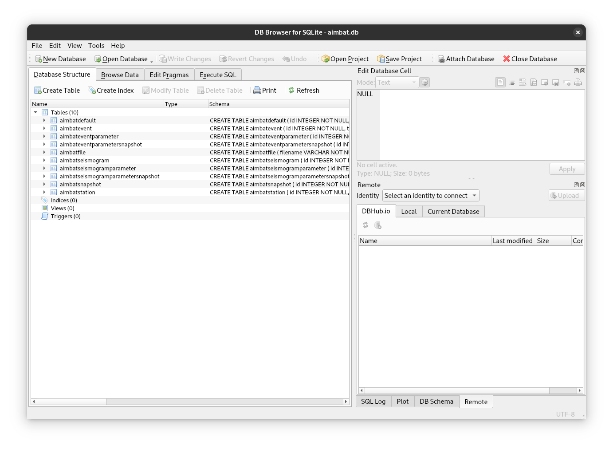

Data#
Because a lot of operations in AIMBAT involve adjusting parameters that do not require reading entire seismograms, the time series components of the seismograms are kept separate from the rest of the data. If this were not the case, doing something like adjusting the time window for the cross-correlation for an event with 200 seismograms, would require reading all 200 seismograms from disk, even though their data are not actually used for that operation. Not having to do this naturally benefits performance, but also means that an AIMBAT project does not really use up much disk space at all. As this is true for any amount of seismograms, we can include multiple events in a single project.
Data hierarchy#
Moving away from storing all data in individual files means things are organised differently. Most importantly, seismograms, after importing them into a project, no longer each contain event and station information. Instead they use (and share) separately stored events and stations. Thus a single event will contain multiple seismograms. The same is true for a single station, while the seismograms themselves use exactly one event, one station, and one data source (containing the time series).
---
title: AIMBAT data hierarchy
---
erDiagram
EVENT ||--o{ SEISMOGRAM : "used by"
STATION ||--o{ SEISMOGRAM : "used by"
SEISMOGRAM ||--|| "DATA SOURCE" : uses
While all of this happens transparently to the user, there are still some things to be mindful of:
- Seismograms that are supposed to be processed together are no longer identified e.g. by being stored in the same directory, but instead from using the same event and station. Thus the files they are created from when adding them to an AIMBAT project must contain identical station and event data.
- Deleting1 an event or station from a project will remove all related seismograms.
- Conversely, deleting a seismogram will not remove the event or station. This remains true even if an event or station end up not being used by any seismograms in the project.
- After importing a seismogram into a project, it no longer accesses the metadata stored in the source file. It does, however, still need to be able to read the time series data from it.
Tip
If this all seems overly complicated to you, remember that often parameters that apply to all seismograms of an event need to be changed to the same value. Organising the data like this means we only need to change the parameters in one place. And there are some additional perks when setting things up this way!
Project file#
If the above section sounded a bit "databasey" to you, that is because you are spot on! AIMBAT projects consist of a single sqlite file (which is automatically generated when a new project is created). This file contains a database to manage all aspects of an AIMBAT project. Understanding the internals of this file (or all the tables used in the database) is not particularly important for normal usage, though it might be useful to look at the data directly in cases where AIMBAT behaves in unexpected ways (e.g. due to inconsistencies in the seismogram files used as input). To do this we suggest viewing the database in tools such as DB Browser for SQLite. 
Parameters#
As alluded to above, there is a hierarchy to how data are structured in AIMBAT, and a major benefit of this is that parameters can be applied at different levels. Thus there are three tiers of parameters that control behaviour and processing:
- AIMBAT defaults: shared across all events and seismograms in a project.
- Event parameters: specific to an event (or shared across all seismograms of that event).
- Seismogram parameters: specific to a single seismogram.
AIMBAT Defaults#
AIMBAT defaults are global settings that control how the application itself
behaves, as well as defaults for event and
seismogram parameters when they are instantiated.
The currently used values for these parameters can be found by running
aimbat settings in your terminal. As some settings are relevant before
a project is created, they cannot stored in the project file. To override these
settings you can set the corresponding environment variable directly (e.g.
export AIMBAT_PROJECT=different_project_name.db) or place those settings in a
.env2 file. Note that if you set them in both places the environment
variable is used.
Event Parameters#
Event parameters are used during processing. They are parameters that are
specific to an event (e.g. if an event should be marked as completed), or
parameters that are shared across all seismograms of that event (e.g. time
window for the cross-correlation, filter parameters, etc.).
These parameters are attributes of the
AimbatEventParametersBase
class.
Seismogram Parameters#
Seismogram parameters are also used during processing. Most notably the time
picks belong to this tier. These parameters are attributes of the
AimbatSeismogramParametersBase
class.
Snapshots#
The event and seismogram parameters are stored separately from the events and seismograms (much like the seismograms link to an event and station instead of saving them in the same object). This opens up the possibility to save an arbitrary number of copies of these parameters that capture the current state of processing. This allows for risk free experimentation with different parameters - if something goes wrong, you can always roll back to the last (or any other) snapshot.
Tip
It is always a good idea to create a snapshot right after importing new data!
UUID (Universally Unique Identifiers)#
Internally, the items in a project use UUIDs to identify themselves. They look something like this:
37a8245f-c508-46a7-9bbc-d1c601e42983
The length and randomness of these identifiers guarantee no two items will ever have the same ID (even if generated on two separate computers, in different databases etc.), but they are a bit unwieldy to use directly. To make things easier, they are typically presented in a truncated form to the user (but always long enough to be unique). For example, if there are only four seismograms and they have these UUIDS:
6a4acdf7-6c7b-4523-aaaa-0a674cdc5f2d
647568aa-8361-45ef-bfc8-61f873847f17
c980918d-106d-44d9-a3fa-5740f58edf4e
5dcb5c4b-b416-4a7b-870f-9a8da42a7dd2
they can still be unambiguously identified using only the first two characters:
6a
64
c9
5d
If two characters are insufficient, then three will be used, and so on.